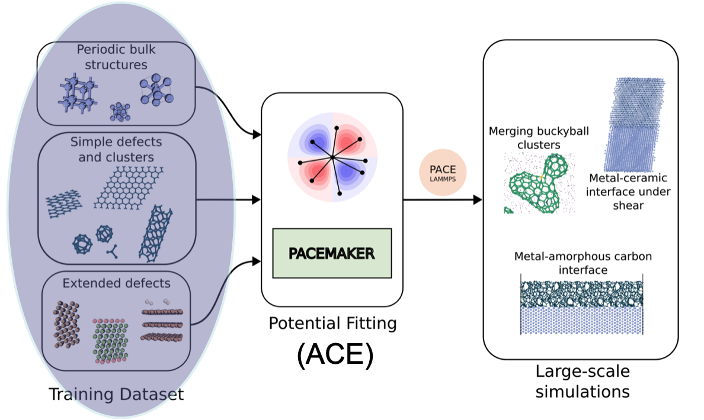
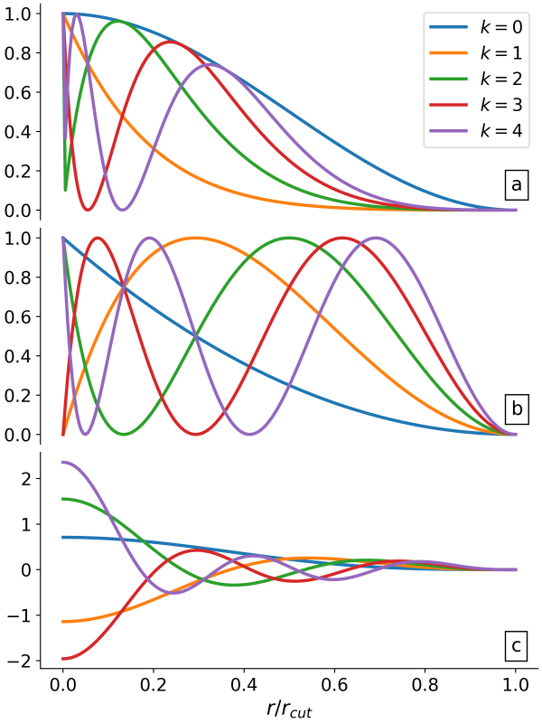
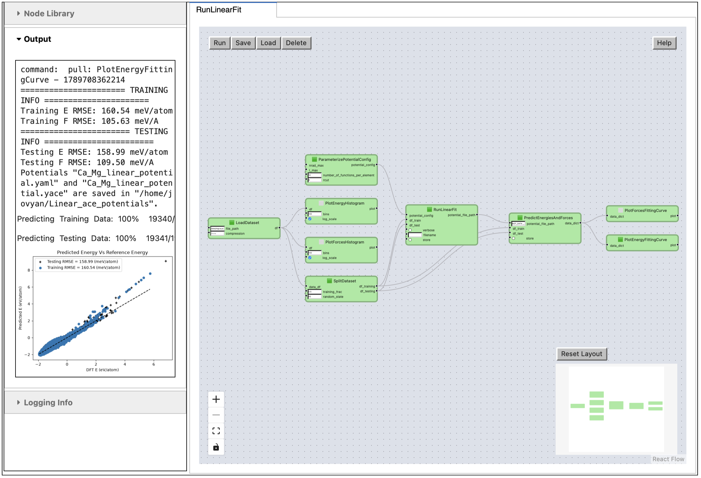

Application: Fit MLIP#
This notebook continues the ASSYST workflow from 4-assyst.ipynb: the structures and energies generated there become the training data for a machine-learned interatomic potential (MLIP), fitted and validated here as a pyiron_workflow graph.
References#
In this notebook we fit an Atomic Cluster Expansion interatomic potential using the pacemaker software.
Loading and Analyzing the dataset#
Recalling the workflow, we are in the first essential step of loading the training dataset

As a first step, we load the dataset by specifying the `file_path’. This dataset has been generated for the CaMg system using the ASSYST approach discussed in the previous section 4-assyst.ipynb.
Split the dataset into training and test#
In a second step, we split the dataset into training and testing datasets.
This is done by choosing the percentage used for the training dataset through the training_frac parameter, where training_frac = 0.5 means we use 50% for training and 50% for testing.
The histogram of the total energies of all atomic structures in the dataset is plotted using the PlotEnergyHistogram node. Similarly, using the PlotForcesHistogram Node, we can plot the forces histogram
Define and specify the configuration of the ACE potential#
Following the PACEmaker notation, we create a file similar to input.yaml (see the PACEmaker documentation for more details).
fit:
fit_cycles: 1
loss: {L1_coeffs: 1e-08, L2_coeffs: 1e-08, kappa: 0.08, w0_rad: 0, w1_rad: 0, w2_rad: 0}
maxiter: 1000
optimizer: BFGS
trainable_parameters: ALL
weighting: {DE: 1.0, DElow: 1.0, DEup: 10.0, DF: 1.0, DFup: 50.0, energy: convex_hull,
nfit: 20000, reftype: all, seed: 42, type: EnergyBasedWeightingPolicy, wlow: 0.95}
.
.
.
potential:
bonds:
ALL:
dcut: 0.01
radbase: SBessel
radparameters: [5.25]
rcut: 6.0
elements: [Mg, Ca]
embeddings:
ALL:
fs_parameters: [1, 1, 1, 0.5]
ndensity: 2
npot: FinnisSinclairShiftedScaled
functions:
number_of_functions_per_element = 300
ALL:
lmax_by_orders: [15, 6, 2, 1]
nradmax_by_orders: [0, 6, 3, 1]
1. Embeddings#
specify how the atomic energy \(E_i\) depends on the ACE properties/densities \(\varphi\). The most approximate approach, but the most efficient for potential fitting, is the linear expansion \(E_i = \varphi\). Non-linear expansions, e.g. including the square root, provide more flexibility and accuracy of the final potential, but require significantly more computational resources for fitting.
Embeddings for ALL species:
non-linear
FinnisSinclairShiftedScaled2 densities
fs_parameters’: [1, 1, 1, 0.5]: $\(E_i = 1.0 * \varphi(1)^1 + 1.0 * \varphi(2)^{0.5} = \varphi^{(1)} + \sqrt{\varphi^{(2)}} \)$
2. Radial functions#
Radial functions are defined by orthogonal polynomals. Examples are:
(a) Exponentially-scaled Chebyshev polynomials (λ = 5.25)
(b) Power-law scaled Chebyshev polynomials (λ = 2.0)
(c) Simplified spherical Bessel functions

Radial functions specification have to be provided for ALL species pairs (i.e. Al-Al, Al-Li, Li-Al, Li-Li):
based on the Simplified Bessel function
and cutoff, e.g. \(r_c=6.0\)
3. B-basis functions#
B-basis functions specifications for ALL species type interactions, i.e. Al-Al block:
maximum order = 4, i.e. body-order 5 (1 central atom + 4 neighbour densities)
nradmax_by_orders: 15, 3, 2, 1
lmax_by_orders: 0, 3, 2, 1
For simplicity, the main inputs that we will consider for the potential configurations are:
number_of_functions_per_element: specifies how many functions will be provided in the potentialrcut: specifies what the cutoff radius is
Linear fitting#
Finally, we run our fit with the thus defined potential_config and then save the potential files inside a new folder.
Note: Setting verbose = True will show all the details of building the design matrices.
Workflow For Fitting and Validating the Potential#
Task
Create a workflow to fit a linear ACE potential, then perform a level 1 validation of the potential. Consider the following steps,
We need to get the
RunLinearFitnode and alsoParameterizePotentialConfignode.Use the fitted potential with
PredictEnergiesAndForcesnode for both training and testing datasets.Add fitting plotting nodes such as
PlotEnergyFittingCurveorPlotForcesFittingCurveto see how accurate our fitted potentials are with respect to predictingenergiesandforces.
Hint: You can find the relevant nodes to perform the fitting in atomistic -> fitting -> ace and for plotting in atomistic -> fitting -> plot
Exercise: change the number_of_functions_per_element to a higher value (i.e., 50) and check the fitting curves. Did the fit get better or worse? why?
Note: You can save the potential under a new name using the filename input in save_potential node.

from pyiron_workflow import Workflow
from pyironflow import PyironFlow
from pyiron_nodes.atomistic.fitting.dataset import ReadPickledDatasetAsDataframe, SplitTrainingAndTesting
from pyiron_nodes.atomistic.fitting.ace import ParameterizePotentialConfig, RunLinearFit, PredictEnergiesAndForces
from pyiron_nodes.atomistic.fitting.plot import PlotEnergyHistogram, PlotForcesHistogram, PlotEnergyFittingCurve, PlotForcesFittingCurve
How make_linearfit builds the workflow#
make_linearfit wires together the fitting pipeline in the same node-and-edge style used throughout this tutorial:
ReadPickledDatasetAsDataframe(file_path=...)— loads the ASSYST-generated structures and reference energies/forces from4-assyst.ipynbinto a single dataframe.PlotEnergyHistogram/PlotForcesHistogram— read-only nodes that visualize the loaded dataset before any fitting happens (the histograms in the Loading and Analyzing the dataset section above).SplitTrainingAndTesting(data_df=..., training_frac=...)— splits the dataframe into a training set, used to fit the potential, and a held-out testing set, used only to check how well it generalizes.ParameterizePotentialConfig(number_of_functions_per_element=..., rcut=...)— builds the ACEinput.yaml-style configuration described in the Define and specify the configuration section above, from just the two parameters that matter most for this tutorial.RunLinearFit(potential_config=..., df_train=..., df_test=...)— fits the linear ACE potential and writes the resulting potential file; note that it depends on both the configuration node and the two halves of the split dataset.PredictEnergiesAndForces(potential_file_path=..., df_train=..., df_test=...)— applies the freshly fitted potential back to the training and testing structures, producing predicted energies and forces to compare against the reference values.PlotEnergyFittingCurve/PlotForcesFittingCurve— plot predicted vs. reference energies/forces for both datasets; this is what the level-1 validation in the task below actually inspects.
As in the earlier notebooks, each node’s inputs are wired either to a plain value (training_frac, rcut, …) or to another node’s output (wf.SplitDataset.outputs.df_training, …). The dependency graph makes explicit which steps RunLinearFit and PredictEnergiesAndForces depend on — and in particular that the potential is evaluated on data it was not trained on.
def make_linearfit(
workflow_name: str,
file_path: str = "data/mgca.pckl.tgz",
compression: str | None = None,
training_frac: float | int = 0.5,
number_of_functions_per_element: int | None = 10,
rcut: float | int = 6.0,
):
wf = Workflow(workflow_name)
# Workflow connections
wf.LoadDataset = ReadPickledDatasetAsDataframe(
file_path=file_path, compression=compression
)
wf.PlotEnergyHistogram = PlotEnergyHistogram(
wf.LoadDataset
)
wf.PlotForcesHistogram = PlotForcesHistogram(
wf.LoadDataset
)
wf.SplitDataset = SplitTrainingAndTesting(
data_df=wf.LoadDataset.outputs.df, training_frac=training_frac
)
wf.ParameterizePotentialConfig = ParameterizePotentialConfig(
number_of_functions_per_element=number_of_functions_per_element, rcut=rcut
)
wf.RunLinearFit = RunLinearFit(
potential_config=wf.ParameterizePotentialConfig,
df_train=wf.SplitDataset.outputs.df_training,
df_test=wf.SplitDataset.outputs.df_testing,
verbose=False,
)
wf.PredictEnergiesAndForces = PredictEnergiesAndForces(
potential_file_path=wf.RunLinearFit.outputs.potential_file_path,
df_train=wf.SplitDataset.outputs.df_training,
df_test=wf.SplitDataset.outputs.df_testing,
)
wf.PlotEnergyFittingCurve = PlotEnergyFittingCurve(wf.PredictEnergiesAndForces)
wf.PlotForcesFittingCurve = PlotForcesFittingCurve(wf.PredictEnergiesAndForces)
return wf
wf = make_linearfit("RunLinearFit")
pf = PyironFlow([wf], root_path="pyiron_nodes")
pf.gui
